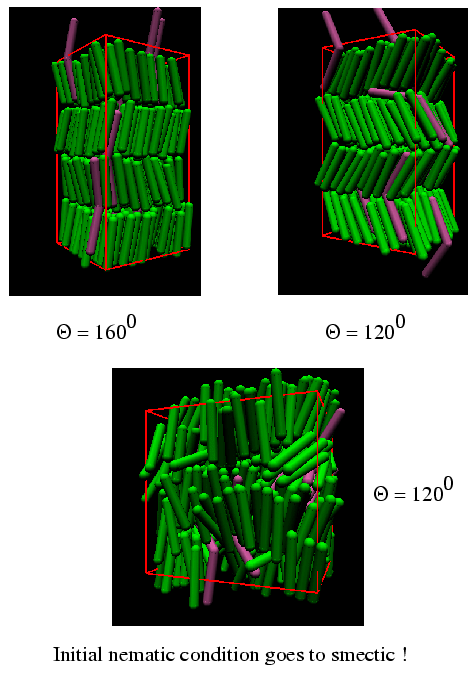

Recent experiments\footnote {R. Pratibha, N. V. Madhusudana, and B. K. Sadashiva, {\sl Science}, {\bf288}, 2184 (2000).} indicate that doping a very low concentration of bent-core molecules in a smectic solvent can induce tilted and/or biaxial smectic phases. We have carried out Monte Carlo (MC) simulations of a mixture of rod-like molecules (spherocylinders) and bent-core molecules (spherocylinder dimers) to verify the experimental results and to gain a deeper understanding at a molecular level. Our MC results show that when the end-to-end distance of the bent-core molecules is twice the smectic layer-spacing, a small concentration of bent-core molecules can induce anticlinic ordering in an untilted smectic phase. However, when the end-to-end distance is equal to the layer spacing we observe a nano-phase segregation, in which bent-core molecules are concentrated in between the smectic layers, depending on the concentration of bent-core molecules and opening angle. We have carried out a series of simulations to study the e ffect of opening angle, length and concentration of the bent-core molecules on the nature of tilted phase and nano-phase segregation.

{kind=link}